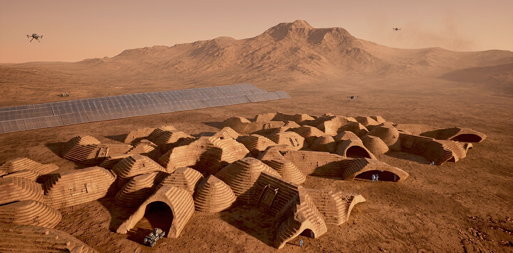

Luka Pejic
Space Architecture · Master's Student
Space Architecture · Master's Student
Selected Work

01 · Space Architecture
Orbital testbed for artificial Martian gravity and closed-loop biological life support. 6 Starship launches. Reviewed by David Nixon — architect of the ISS Architecture Beyond Earth — who noted that none of the designs developed by the aerospace industry so far addresses reduced gravity research capability, and that this design shows it would be physically quite possible to add that capability to a conventional space station design.

02 · Space Architecture
Mars surface habitat at Jezero Crater designed for long-duration human settlement. Inflatable modules constrained by Starship payload dimensions, reinforced with 3D-printed regolith walls, centred on a biological life support system with individual plant pod control for lighting spectrum, nutrient solution, and atmospheric composition.
Research & Conferences
03 · Conference Presentation · IAA 2026
Presentation of the Promethea Station orbital habitat at the 24th IAA Humans in Space Symposium — covering artificial gravity design, ICELSS inflatable greenhouse modules, and closed-loop biological life support methodology developed at TU Wien.
04 · Abstract · IAC 2026
Abstract submitted to the International Astronautical Congress 2026, presenting a methodology for personalised biological life support systems — addressing individual-level biological parameter variation in the context of long-duration human spaceflight and Mars surface habitation.
05 · Independent Paper · Not Peer-Reviewed
An independent exploration of biological autonomy as a design principle for closed ecological life support systems — written in personal time, outside of academic coursework. Not peer-reviewed.